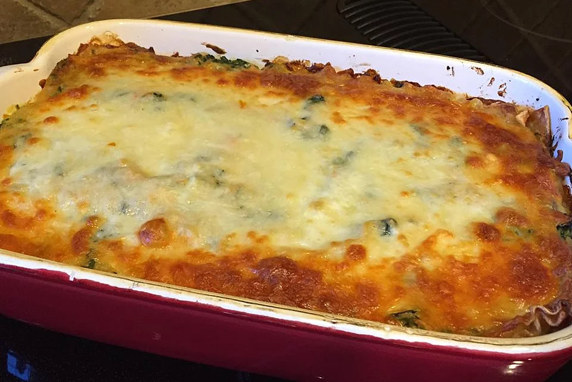

Lasagna
Return to Main Page

Follow this recipe to make this lasagna
Delicious vegetable lasagna with a white creamy sauce. A family favorite!
Igredients:
- 6 ¾ lasagna noodles
- 3 tablespoons margarine
- 3 tablespoons all-purpose flour
- ⅜ teaspoon salt
- ⅙ teaspoon ground black pepper
- ¾ cup milk
- ⅓ cup and ½ tablespoon and ½ teaspoon vegetable broth, or as needed
- 1 ½ tablespoons white wine
- ⅓ cup and ½ tablespoon and ½ teaspoon grated Parmesan cheese
- ¾ cup light ricotta cheese
- ¾ egg
- ¾ egg white
- ½ tablespoon and ¾ teaspoon olive oil
- 1 ½ cups coarsely shredded carrots
- 1 ½ cups coarsely chopped zucchini
- ¾ (10 ounce) package frozen chopped spinach, thawed and drained
- ¾ cup shredded mozzarella cheese
Steps:
- Bring a large pot of lightly salted water to a boil. Cook lasagna in the boiling water, stirring occasionally until cooked through but firm to the bite, about 8 minutes. Drain.
- Preheat oven to 375 degrees F (190 degrees C).
- Melt margarine in a skillet over low heat; cook and stir flour, salt, and pepper into the melted margarine until smooth and bubbling, 2 to 3 minutes. Add milk and broth into flour mixture, stirring constantly; bring sauce to a boil. Stir wine into sauce and remove from heat. Stir Parmesan cheese into sauce until smooth.
- Whisk ricotta cheese, egg, and egg white together in a bowl.
- Heat olive oil in a skillet over medium-high heat; saute carrots, zucchini, and spinach until just becoming tender, 5 to 10 minutes. Stir vegetable mixture into ricotta mixture.
- Layer 1/3 the lasagna noodles, 1/3 the ricotta-vegetable mixture, and 1/3 the Parmesan sauce in a 9x13-inch baking dish; repeat layering 2 more times with remaining ingredients, ending with a layer of mozzarella cheese.
- Bake in the preheated oven until cheese is lightly browned and bubbling, about 30 minutes.